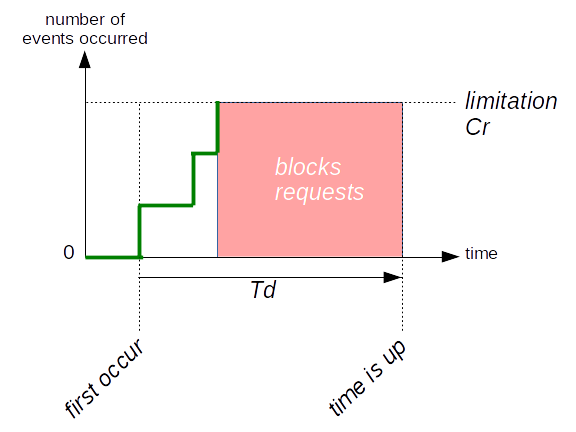

Glossary
This page gives you additional information about certain aspects of mod_qos to get a better understanding how to use the module.
Environment Variables
The Apache web server provides a mechanism for storing information
in so called environment variables. mod_qos uses these
variables to exchange data respectively signalize events between different
rules defined by the corresponding directive. These
variables can also be written or read by other Apache modules, such as
mod_setenvifplus  .
.
It is also possible to write the values of these variables to your log
file using the format string %{VARNAME}e within the
TransferLog/CustomLog
directives. Or you can use them within error pages using
server-side includes
(SSI).
Directives
The module is configured by directives. All directives process the connection, HTTP request, and response data in a pre-defined sequence. The following graph shows the order in which the directives work.
{kind=link}
Limitation Counter
Limitation counters limit the number how often (Cr) something is allowed to happen in a certain amount of time (Td). These rules trigger a timer whenever the defined event occurs the first time and start to count every subsequent event until the timer expires. If the event counter reaches the defined limitation, requests are getting blocked until the time is up.

The directives implementing this rule type are:
QS_EventLimitCountQS_CondEventLimitCountQS_ClientEventLimitCountQS_CondClientEventLimitCountQS_ClientEventBlockCount
Rules
mod_qos allows you to configure different kind of rules. Every rules implement a counter, measuring either the concurrency (how many times something happens at the same time), the occurrence (how often does something happen in a certain amount of time), or the throughput (sent amount of data or number of request).
Every rule has it's own threshold and maintains its own counter which is identified by either an URL pattern/matching string or by an environment variable name. You can configure as many rules as you want.
Some counters are only available once. This applies to the counters of
the rules using the
QS_Block,
QS_SrvSerialize, and
QS_ClientSerialize
environment variables.